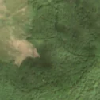
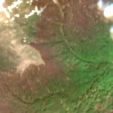

33,3 ha de pădure schimbată lângă Toplița
Între vara lui 2025 și 27 aprilie 2026, pe aproximativ 33,3 ha de pădure din orașul Tismana, județul Gorj, imaginile Sentinel-2 arată că vegetația a dispărut sau s-a schimbat puternic. Nu pare o tăiere de lemn.
Autorizația de tăiere
nu e tăiere de pădure
Schimbarea nu pare tăiere de lemn, așa că autorizațiile de tăiere nu se aplică. Nu s-a schimbat nimic pe teren: e doar sezonul, norii sau lumina.
Ce se vede în poze: Zona marcată era pădure dedeasă în poza detaliată și în «înainte». În «după» (început de mai) pădurea apare brună, dar în poza largă de la sfârșitul lui iunie zona este din nou verde, cu aceeași textură ca pădurea din jur, deci nu se vede o tăiere.


Înainte și după: Copernicus Sentinel-2, 10 m pe pixel, conturul zonei cu portocaliu. Poza detaliată (Esri World Imagery) e de acum 1–4 ani: arată ce era acolo înainte, nu tăierea.
Pe scurt
- Identificator
- 20260427_45221_22896
- Locul
- Toplița, orașul Tismana, județul Gorj (SIRUTA 82430)
- Coordonate (centru)
- 45.22121, 22.89602 · Google Maps · OpenStreetMap
- Suprafața
- 33,3 ha (din pixeli de 10 m; ± câțiva pixeli pe margine)
- Pădurea întreagă
- în vara lui 2025 (de atunci, nori sau iarnă)
- Prima imagine cu schimbarea
- 27 aprilie 2026
- Imagini în care se vede schimbarea
- 4
- Cât de sigur e semnalul din satelit
- scăzută
- Autorizația cea mai apropiată
- APV 2500143200350 · Ocolul Silvic Tismana, valabilă 22 august 2025 – 30 noiembrie 2025, la 244 m de zonă
- Terenul
- pădure de stat, după amenajamentul silvic publicat
- Arie protejată
- Nordul Gorjului de Vest
- Garda Forestieră
- Râmnicu Vâlcea
Dacă vrei să verifici sau să sesizezi
- Pădurile din județul Gorj sunt în grija Gărzii Forestiere Râmnicu Vâlcea, care controlează tăierile și dă amenzile.
- Autorizația găsită în zonă e emisă de Ocolul Silvic Tismana.
- Formularul Gărzii Forestiere Naționale primește sesizări și fără nume. Trimite linkul acestei pagini, coordonatele și pozele. Dacă tăierea e în desfășurare, sună la 112.
- Autorizațiile și transporturile de lemn se pot căuta în Inspectorul Pădurii.
Pagina arată ce se vede din satelit și ce scrie în registrul public; nu e o dovadă în sine.
Cum citezi zona
Linkul acestei pagini nu se schimbă. Dacă zona iese vreodată de pe hartă, pagina rămâne, cu data și cu ce știam despre ea.
Pădurea RO, zona 20260427_45221_22896: 33,3 ha, Toplița, orașul Tismana, județul Gorj; schimbare văzută din satelit între vara lui 2025 și 27 aprilie 2026. https://iliemihai.github.io/padurea-ro/zona/20260427_45221_22896/ (consultat la [data]). Date: CC BY 4.0.
Datele zonei: GeoJSON · toate zonele: date deschise · licența CC BY 4.0.
Istoricul zonei pe hartă
Starea se poate schimba când registrul publică o autorizație sau când analistul vede poze mai bune. O ținem aici, ca un link citat să arate și ce spuneam atunci.
Pe hartă cel târziu din 5 noiembrie 2026.
- 5 noiembrie 2026 – azi · nu e tăiere de pădure
Detalii tehnice, pentru verificare
De ce acest nivel de încredere:
- văzută schimbată în 4 imagini diferite
- peste 3 ha
- ultima dată am văzut-o intactă în vara lui 2025 (de atunci, nori sau zăpadă)
- fără părerea AI
Ce a văzut analistul cu context: Tonul brun-roșcat din imaginea Sentinel-2 din 05.05.2026 urmărește relieful, nu are margini drepte, nu are sol dezgolit, cioate sau drumuri de colectare, iar imaginea largă din 29.06.2026 arată coronamentul verde continuu în contur. Aceasta indică întârzierea înfrunzirii la 1338 m altitudine (fag), nu o tăiere rasă. Autorizația APV de la 244 m, fără suprapunere, nu confirmă o tăiere, iar norii din imaginea largă reduc certitudinea.
- Placa Sentinel-2
- 34TFR
- NDVI de referință
- 0.87
- NBR de referință
- 0.57
- Scăderea în pădurea din jur
- 0.09
- Persistență
- 1.0
- NDVI / NBR după
- 0.458 / 0.045
- Analistul cu context (model)
- sezon_nori · 0.62
Cum se calculează fiecare: metodologia.
Pune harta zonei într-un articol
Copiază codul în articol (merge în majoritatea site-urilor de știri). Sau pune doar linkul: WhatsApp, Facebook și X arată singure poza zonei.